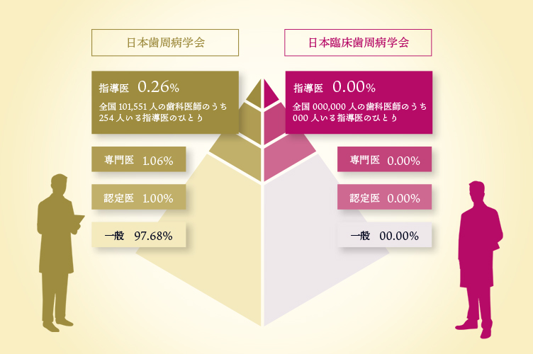

- ホーム
- コンセプト・医院の強み
- 歯周病専門医としてお伝えしたい事
歯周病に関する専門家
「歯周病専門医」について
鹿児島中央駅すぐの歯科医院「ユミデンタルオフィス」は、日本歯周病学会の認定を受けた歯周病専門医・指導医や歯周病学会認定歯科衛生士が在籍しており、歯周病治療に特化していることが特徴です。こちらでは、歯周病専門医・指導医 についてご紹介しています。
歯周病学会認定専門医・指導医として
歯周病は日本人の約8割が発症もしくは予備軍とされていますが、どんな病気なのか詳しくご存じの方はあまりいないのではないでしょうか？ 歯周病は決して年配の方だけがかかる病気ではなく、早ければ10代でも症状が出てきてしまいます。自分の歯を守るためにも、歯周病についての正しい情報を入手し、適切な治療を行う必要があります。
当院の院長は、特定非営利活動法人「日本歯周病学会」認定の専門医・指導医です。 歯周病専門医とは、歯周病治療に関する知識と技術が認められた歯科医師が認定される資格で、歯科医師全体の１％ほど、指導医は0,26%しかいません。 また、特定非営利活動法人日本臨床歯周病学会の指導医、歯周インプラント認定医も取得しています。
両学会の指導医を持つ歯科医師は全国でも〇〇名程度です。
指導医として日々臨床を行いながら、学会発表や講演などを行なっています。
歯周病の専門家として、歯周病に関することならどんなことでも対応できるのが当院の大きな強みです。歯周病に関することでしたら、まずは当院にご相談ください。

歯周病認定医・専門医・指導医とはどんな資格？
歯周病の専門家としては、「歯周病認定医」「歯周病専門医」「歯周病指導医」という資格があります。これらの資格は日本歯科医学会の中でも歯周病に特化した団体のなかで、高度な専門知識と技術を持つ歯科医師を養成するために作られています。
歯周病認定医
歯周病認定医は、専門医・指導医を目指すために最初に取得しなければならない資格です。まずは研修施設で3年間の研修を受け、必要な歯周病治療の知識と技術を身に付けたうえで認定試験に合格する必要があります。
歯周病専門医
研修施設での研修を5年間、もしくは認定医取得から2年間行うことで、より専門的かつ高度な歯周病治療の知識と技術を身に付け、さらに専門医試験に合格することで得られる資格です。
歯周病指導医
歯周病専門医の資格取得から7年間、学会および地域で指導的な研修を行ったうえで指導医試験に合格することで得られる資格です。指導医は全国の歯科医師の中の0.26%しかいません。
歯周病学会認定歯科衛生士について
「歯周病学会認定歯科衛生士」とは、日本歯周病学会が認定している歯周病に関する専門資格です。一般的な歯科衛生士の資格を持ちながら、さらに歯周病治療に精通していることが認定の条件で、歯周病専門医と協力して歯周病の治療やメインテナンスを行います。当院のスタッフは、歯周病学会認定歯科衛生士の資格を取得しています。
一般衛生士と認定歯科衛生士の違いとは？
歯科衛生士とは、歯科医師が行う歯科診療の補助をはじめ、予防処置などを行うことができるスタッフです。認定歯科衛生士は、一般的な歯科衛生士の国家資格を取得してから5年以上の実務経験を積み、学会が指定する単位を取得したうえで試験に合格することで認定を受けることができます。.002％しかいません。
つまり、歯周病学会認定歯科衛生士は一般的な歯科衛生士の業務に加えて歯周病治療に特化した知識・技術を持った専門家ということになります。
重度歯周病の治療もお任せください
当院の院長は歯周病指導医の資格を持った歯周病治療の専門家です。さらにスタッフには歯周病学会認定歯科衛生士も在籍しており、初期の歯周病はもちろん重度にまで進行してしまった歯周病に対しても適切かつ確実な治療を行う体制が整っています。
歯周病で多くの歯を失ってしまった方や、歯周病が原因で抜歯を勧められている方、歯周病の専門家に相談してみたいという方も、ぜひ当院にお任せください。当院では歯周病の治療だけでなく治療法のご提案やセカンドオピニオンまで幅広く対応します。
PICK UP！ 歯周病治療は歯周病専門医にお任せください
歯周病治療は、通常の歯科医院であればどこでも対応できる病気です。しかし、その治療内容や患者様への対応は、医師が持っている知識や技術によって大きく異なります。
どんなことであっても、より安全で確実な対応を求めるなら専門家に相談することが一番です。それが、自分自身の健康に直結する医療に関することであればなおさらではないでしょうか。歯周病は日本人が歯を失ってしまう原因の第1位とされ、成人の8割は発症しているか予備軍だと言われています。つまり、非常にかかりやすく、再発しやすいのが歯周病なのです。
歯周病治療は簡単に治る病気ではありませんが、患者様一人ひとりに合わせた治療やメインテナンスを繰り返すことで、確実に改善することができます。お口の健康は全身の健康にもつながります。歯周病に関することでしたら、当院にお任せください。